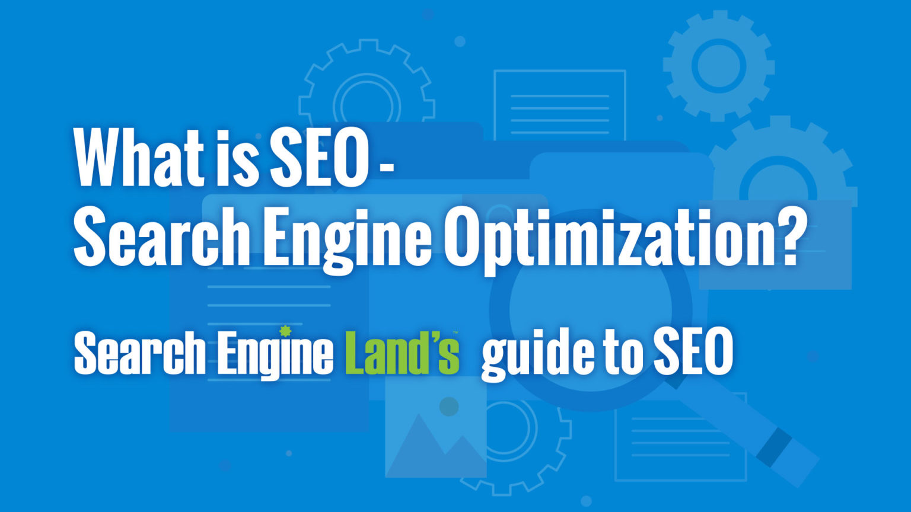

SEO stands for “search engine optimization.” In simple terms, SEO means the process of improving your website to increase its visibility in Google, Microsoft Bing, and other search engines whenever people search for:
The better visibility your pages have in search results, the more likely you are to be found and clicked on. Ultimately, the goal of search engine optimization is to help attract website visitors who will become customers, clients or an audience that keeps coming back.
What you’ll learn in this guide:
SEM and PPC are two other common terms you will read about a lot here on Search Engine Land and hear about in the larger search marketing community. Read on to learn more about both of these terms and how they’re related to SEO.
SEM stands for search engine marketing – or, as it is more commonly known, search marketing.
Search marketing is a type of
digital marketing. It is an umbrella term for the combination of SEO and PPC
activities meant to drive traffic via organic search and paid search.
Put simply, search marketing is the process of gaining traffic and visibility from search engines through
both
paid and unpaid efforts.
So how do SEO and SEM differ? Technically they aren’t different – SEO is simply one-half of SEM:
Now, this is where things get a bit confusing. Today, many people use SEM interchangeably with PPC (which we’ll talk about in the next section). This idea seems to undercut SEO. However, SEO is marketing, just like PPC is marketing. Here’s the best way to think about SEO and SEM: Imagine SEM is a coin. SEO is one side of that coin. PPC is on the flip side.
PPC stands for pay-per-click – a type
of
digital marketing where advertisers are charged whenever one of their
ads gets clicked on.
Basically, advertisers bid on specific keywords or phrases that they want their ads to appear for in the
search
engine results. When a user searches for one of those keywords or phrases, the advertiser’s ad will appear
among
the top results.
So again, if we think of search marketing as a coin, SEO and PPC are two sides of the same coin – SEO is the
unpaid side, PPC is the paid side.
Another key point: it’s important never to think of it as “SEO vs. PPC” (i.e., which one is better) because
these are complementary channels. It’s not an either-or question – always choose both (as long as your
budget
allows it).
As we mentioned before, the terms SEM and PPC are used within the industry interchangeably. However, that
isn’t
the case here on Search Engine Land.
Whenever we mention “SEM,” it will be because we’re referring to both SEO (organic search) and PPC (paid
search).
If you’re curious about the history behind how “SEM” came to mean “PPC” at the exclusion of SEO, you can dig
deeper into these articles:
SEO is a critical marketing channel. First, and foremost: organic
search delivers 53% of all website traffic.
That’s one big reason why the global SEO industry is forecast
to reach a staggering $122.11 billion by 2028. SEO
drives real business results for brands, businesses and organizations of all sizes.
Whenever people want to go somewhere, do something, find information, research or buy a product/service –
their
journey typically begins with a search.
But today, search
is
incredibly fragmented. Users may search on traditional web search engines (e.g., Google,
Microsoft Bing), social platforms (e.g., YouTube, TikTok) or retailer websites (e.g., Amazon).
In fact, 61% of U.S. online shoppers start their product search on Amazon, compared to 49% who start on a
search engine like Google. Also of note from that same research
Trillions
of
searches are conducted every year. Search is often the primary source of traffic for websites,
which makes it essential to be “search engine friendly” on any platform where people can search for your
brand or business.
What this all means is that improving your visibility, and ranking higher in search results than your
competition, can positively impact your bottom line,
SEO is also incredibly important because the search engine results pages (or SERPs) are super competitive –
filled with search features (and PPC ads). SERP features include:
Another reason SEO is critical for brands and businesses: unlike other marketing channels, good SEO work is
sustainable. When a paid campaign ends, so does the traffic. Traffic from social media traffic is at best
unreliable – and a fraction of what it once was.
SEO is the foundation of holistic marketing, where everything your company does matters. Once you understand
what your users want, you can then implement that knowledge across your:
SEO is a channel that drives the traffic you need to achieve key business goals (e.g., conversions, visits,
sales). It also builds trust – a website that ranks well is generally regarded as authoritative or
trustworthy,
which are key elements Google wants to reward with better rankings.
There are three types of SEO:
You maintain 100% control over content and technical optimizations. That’s not always true with off-site
(you
can’t control links from other sites or if platforms you rely on end up shutting down or making a major
change),
but those activities are still a key part of this SEO trinity of success.
Imagine SEO as a sports team. You need both a strong offense and defense to win – and you need fans (a.k.a.,
an
audience). Think of technical optimization as your defense, content optimization as your offense, and
off-site
optimization as ways to attract, engage and retain a loyal fanbase.
Optimizing the technical elements of a website is crucial and fundamental for SEO success.
It all starts with architecture – creating a website that can be crawled and indexed by search engines. As
Gary
Illyes, Google’s trends analyst, once put it in a
Reddit AMA: “MAKE THAT DAMN SITE CRAWLABLE.”
You want to make it easy for search engines to discover and access all of the content on your pages (i.e.,
text,
images, videos). What technical elements matter here: URL structure, navigation, internal linking, and more.
Experience is also a critical element of technical optimization. Search engines stress the importance of
pages
that load quickly and provide a good user experience. Elements such as Core Web Vitals, mobile-friendliness
and
usability, HTTPS, and avoiding intrusive interstitials all matter in technical SEO.
Another area of technical optimization is structured data (a.k.a., schema). Adding this code to your website
can
help search engines better understand your content and enhance your appearance in the search results.
Plus, web hosting services, CMS (content management system) and site security all play a role in SEO.
In SEO, your content needs to be optimized for two primary audiences: people and search engines. What this
means
is that you optimize the content your audience will see (what’s actually on the page) as well as what search
engines will see (the code).
The goal, always, is to publish helpful, high-quality content. You can do
this
through a combination of
understanding your audience’s wants and needs, data and guidance provided by Google.
When optimizing content for people, you should make sure it:
For search engines, some key content elements to optimize for are:
There are several activities that may not be “SEO” in the strictest sense, but nonetheless can align with
and
help contribute indirectly to SEO success.
Link building (the process of acquiring links to a website) is the activity most associated with off-site
SEO.
There can be great benefits (e.g., rankings, traffic) from getting a diverse number of links pointing at
your
website from relevant, authoritative, trusted websites. Link quality beats link quantity – and a large
quantity
of quality links is the goal.
And how do you get those links? There are a variety of website promotion methods that synergize with SEO
efforts. These include:
Generally, when talking about off-site, you’re talking about activities that are not going to directly
impact
your ability to rank from a purely technical standpoint.
However, again, everything your brand does matters. You want your brand to be found anywhere people may
search
for you. As such, some people have tried to rebrand “search engine optimization” to actually mean “search
experience optimization” or “search everywhere optimization.”
Search engine optimization also has a few subgenres. Each of these specialty areas is different from
“regular
SEO” in its own way, generally requiring additional tactics and presenting different challenges.
Five such SEO specialties include:
If you found this page via Google search, you likely searched Google for [what is seo] or [seo].
This guide is published on Search Engine Land, an authoritative website with great expertise on and
experience
in the topic of SEO (we’ve been covering all SEO changes, big and small since 2006).
Originally published in 2010, our “what is SEO” page has earned a whopping 324,203 links.
Put simply, these factors (and others) have helped this guide earn a good reputation with search engines,
which
has helped it rank in Position 1 for years. It has accumulated signals that demonstrate it is authoritative
and
trustworthy – and therefore deserves to rank when someone searches for SEO.
But let’s look at SEO more broadly. As a whole, SEO really works through a combination of:
Many other things factor into how SEO works. What follows is a high-level look at the most important
knowledge
and process elements.
Six critical areas, in combination, make SEO work:
Simply, if you want people to find your business via search – on any platform – you need to understand the
technical processes behind how the engine works – and then make sure you are providing all the right
“signals”
to influence that visibility.
When talking about traditional web search engines like Google, there are four separate stages of search:
But optimizing for Google search is different from optimizing for search other platforms like YouTube or
Amazon.
Let’s take Facebook, for example, where factors such as engagement (Likes, comments, shares, etc.) and who
people are connected to matter. Then, on Twitter, signals like recency, interactions, or the author’s
credibility are important.
And further complicating things: search engines have added machine learning elements in order to surface
content
– making it even harder to say “this” or “that” resulted in better or worse performance.
Research is a key part of SEO. Some forms of research that will improve SEO performance include:
An SEO strategy is your long-term action plan. You need to set goals – and a plan for how you will reach
them.
Think of it your SEO strategy as a roadmap. The path you take likely will change and evolve over time – but
the
destination should remain clear and unchanged.
Your SEO plan may include things such as:
Once all the research is done, it’s time to turn ideas into action. That means:
You need to know when something goes wrong or breaks on your website. Monitoring is critical.
You need to know if traffic drops to a critical page, pages become slow, unresponsive or fall out of the
index,
your entire website goes offline, links break, or any other number of potential catastrophic issues.
If you don’t measure SEO, you can’t improve it. To make data-driven decisions about SEO, you’ll need to use:
After you’ve collected the data, you’ll need to report on progress. You can create reports using software or
manually.
Performance reporting should tell a story and be done at meaningful time intervals, typically comparing to
previous report periods (e.g., year over year). This will depend on the type of website (typically, this
will be
monthly, quarterly, or some other interval),
SEO never ends. Search engines, user behavior and your competitors are always changing. Websites change and
move
(and break) over time. Content gets stale. Your processes should improve and become more efficient.
Bottom line: There’s always something you can be monitoring, testing or improving. Or, as Bruce Clay put it:
SEO
will only be done when Google stops changing things and all your competition dies.
Now that you understand more about what SEO is and how it works – how can you learn more?
Reading (or, if you prefer, watching or listening to) the latest SEO news, research, best practices and
other
developments should become one of your regular habits, whether it’s daily, weekly or monthly. You should
also
invest in attending at least one or two events per year.
The expectations and behavior of searchers are constantly evolving, which means algorithms are constantly
changing to keep up. That, in combination with new breakthroughs in technology (look no further than the
explosive rise of ChatGPT in late 2022 and the sudden addition of generative AI to search results in 2023).
Here are some trusted resources and tips to help you grow as an SEO professional.
Search Engine Land has been covering SEO since 2006. In addition to news stories written by our editorial
staff,
Search Engine Land publishes contributed articles from a diverse group of subject matter experts featuring
helpful SEO tips, tactics, trends and analysis.
We’re biased, but we highly suggest you sign up to receive Search Engine Land’s free email newsletter featuring
a roundup of the latest SEO news, and insights every weekday.
Search Engine Land also has multiple categories on topics
dedicated to specific areas and platforms which you
may find helpful:
(Editor’s Note: We are currently updating this guide, with the goal of having the chapters completely
updated in
the first quarter of 2024.)
Search Engine Land’s Guide To SEO walks you through the fundamentals of optimizing for search so you can
develop
a solid strategy to drive organic traffic to your website.
Our guide explains these factors in more depth, and highlights tactical tips from experts on search engine
optimization that will help your website get more visitors from organic search.
One of the best ways to learn SEO is to experiment. Hands-on experience is one of the absolute best ways to
advance your skills and deepen your SEO knowledge.
Build your own websites – and make them about topics you are passionate about. Try out various tactics and
techniques. See what works and what doesn’t.
SEO requires many other skills. Dig deeper into some of those in 13 essential SEO skills you need to
succeed.
Another way to advance your career is by attending a search conference. The Search Engine Land team programs
the
Search Marketing Expo (SMX) conference series, which has a dedicated SEO track that dives into
various
aspects
of SEO and features some excellent speakers and presentations. SMX Advanced takes place in June and SMX Next in
November.
Beyond that, there are several other options (free and paid) to learn SEO:
Just be careful. While there are many reliable resources, you (or your clients) will discover some outdated
or
wrong SEO information at some point.
Bottom line: there are no “universal” truths or some big secret to SEO. The truth is, you have to put in the
work in all the phases of SEO to grow your visibility, clicks, traffic, authority, conversions, sales and
revenue.